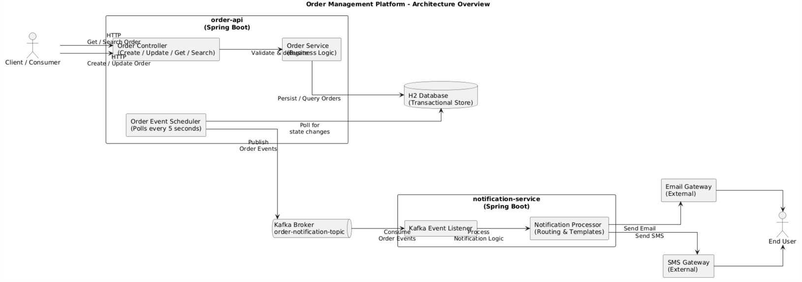
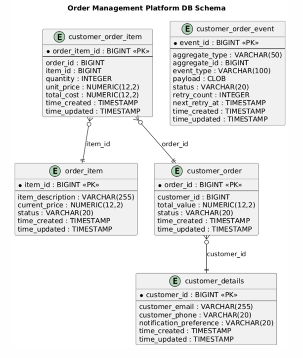
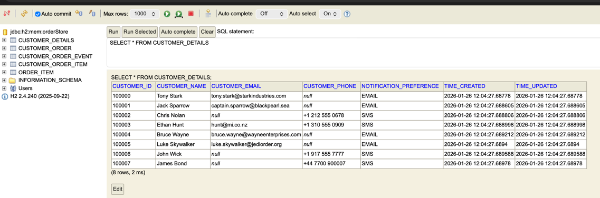
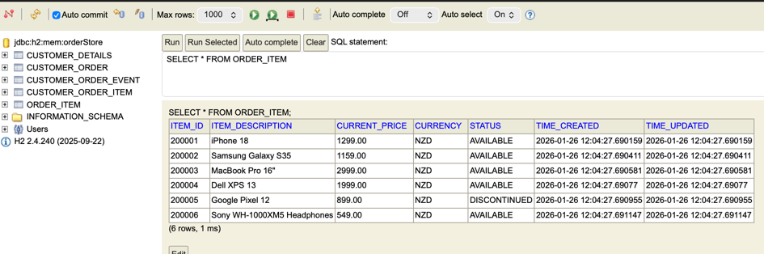
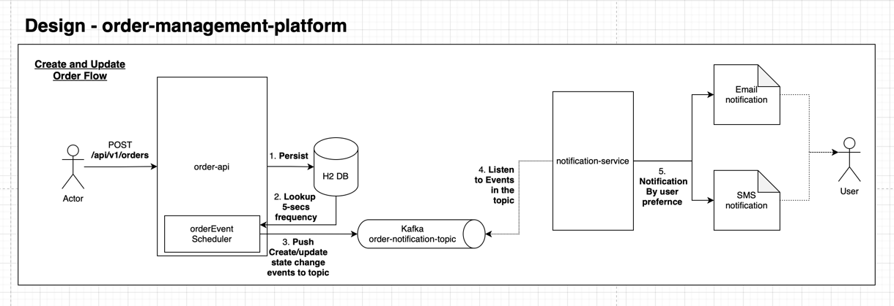
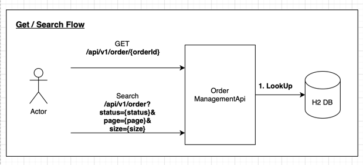

Event-driven architecture for managing customer orders with notification services
Spring BootKafkaH2 DatabaseJPA/HibernateEvent SourcingREST API
Project Overview
The Order Management Platform is a comprehensive system designed to handle customer orders with an
event-driven architecture. It provides robust order management capabilities with automatic event
processing, retry mechanisms, and multi-channel notification delivery (Email and SMS).
Order Management
Complete CRUD operations for managing customer orders and items with RESTful APIs
Event Processing
Automated event handling with scheduler-based processing every 5 seconds
Retry Mechanism
Intelligent retry logic with up to 5 attempts and 30-second intervals
Notification Service
Multi-channel notifications via Email and SMS based on customer preferences
System Architecture
The platform follows a microservices architecture with two main services: the Order API and the
Notification Service, connected via Kafka for asynchronous event processing.

Figure 1: System Architecture Overview
Architecture Components
order-api (Spring Boot): Main API service handling order operations, event scheduling, and Kafka publishing
H2 Database: In-memory transactional datastore for orders, customers, and events
Order Event Scheduler: Polls every 5 seconds for pending events and triggers processing
Kafka Broker: Message broker with "order-notification-topic" for event distribution
notification-service (Spring Boot): Consumes events and routes notifications to Email/SMS gateways
External Gateways: Email Gateway and SMS Gateway for message delivery to end users
Database Schema
The system uses five main entities to manage orders, customers, items, and events with proper
relationship mapping.

Figure 2: Database Entity Relationship Diagram
Key Entities
customer_details - Customer information with notification preferences (EMAIL/SMS)
customer_order - Order records with status and total cost tracking
order_item - Individual items catalog with pricing
customer_order_item - Junction table linking orders to items with quantities
customer_order_event - Event tracking table with retry logic and status management

Figure 3: Customer Details with Notification Preferences

Figure 4: Available Order Items Catalog
Order Processing Flow
Create and Update Flow

Figure 5: Order Creation and Update Workflow
Flow Steps:
Persist Order: Actor creates order via POST to order-api, data saved to H2 database
Event Scheduling: OrderEvent Scheduler polls database every 5 seconds for state changes
Event Publishing: Create/update state change events pushed to Kafka topic
Event Consumption: Notification-service listens to events from Kafka
Notification Routing: Events routed to Email or SMS based on customer preference
Get and Search Flow

Figure 6: Order Retrieval and Search Operations
Simple read operations: GET requests for individual orders by ID or search with filters
(status, page, size) directly query the H2 database and return results.
Event Processing & Retry Mechanism
The system implements a robust retry mechanism to handle transient failures during event processing.